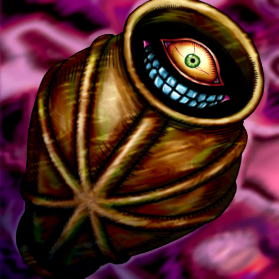

Ancient Jar

Description: "The turn count for spellbound cards is not conducted while the card is in the face-up, defense position."
STATS
ATK: 400
DEF: 200DECK COST
Deck Cost per Card: 11EFFECT NOT IMPLEMENTED
Fusion List (81 Possible Fusions)
- Ancient Jar + Akakieisu = Ushi Oni
- Ancient Jar + Ancient Elf = Mystical Sand
- Ancient Jar + Ancient Sorcerer = Ushi Oni
- Ancient Jar + Fairywitch = Mystical Sand
- Ancient Jar + Arlownay = Mystical Sand
- Ancient Jar + Armaill = Minomushi Warrior
- Ancient Jar + Armed Ninja = Minomushi Warrior
- Ancient Jar + Baby Dragon = Stone D.
- Ancient Jar + Beautiful Headhuntress = Mystical Sand
- Ancient Jar + Blackland Fire Dragon = Stone D.
- Ancient Jar + Blue-Eyed Silver Zombie = Stone Ghost
- Ancient Jar + Bone Mouse = Stone Ghost
- Ancient Jar + Corroding Shark = Stone Ghost
- Ancient Jar + Crawling Dragon #2 = Stone D.
- Ancient Jar + Crawling Dragon = Stone D.
- Ancient Jar + Curtain of the Dark Ones = Ushi Oni
- Ancient Jar + Dancing Elf = Mystical Sand
- Ancient Jar + Dark Elf = Mystical Sand
- Ancient Jar + Dark Witch = Mystical Sand
- Ancient Jar + Dragon Piper = Dissolverock
- Ancient Jar + Dragon Zombie = Stone D.
- Ancient Jar + Enchanting Mermaid = Mystical Sand
- Ancient Jar + Eyearmor = Minomushi Warrior
- Ancient Jar + Fairy's Gift = Mystical Sand
- Ancient Jar + Fiend Sword = Tiger Axe
- Ancient Jar + Fire Eye = Dissolverock
- Ancient Jar + Fire Reaper = Stone Ghost
- Ancient Jar + Firegrass = Dissolverock
- Ancient Jar + Flame Ghost = Stone Ghost
- Ancient Jar + Gemini Elf = Mystical Sand
- Ancient Jar + Goddess with the Third Eye = Mystical Sand
- Ancient Jar + Greenkappa = Minomushi Warrior
- Ancient Jar + Harpie Lady = Mystical Sand
- Ancient Jar + Hibikime = Mystical Sand
- Ancient Jar + Ice Water = Mystical Sand
- Ancient Jar + Kagemusha of the Blue Flame = Minomushi Warrior
- Ancient Jar + Kageningen = Minomushi Warrior
- Ancient Jar + Kamionwizard = Ushi Oni
- Ancient Jar + Key Mace = Mystical Sand
- Ancient Jar + Koumori Dragon = Stone D.
- Ancient Jar + Lady of Faith = Mystical Sand
- Ancient Jar + Lesser Dragon = Stone D.
- Ancient Jar + M-Warrior #1 = Minomushi Warrior
- Ancient Jar + M-Warrior #2 = Minomushi Warrior
- Ancient Jar + Masaki the Legendary Swordsman = Minomushi Warrior
- Ancient Jar + Masked Clown = Minomushi Warrior
- Ancient Jar + Metal Dragon = Stone D.
- Ancient Jar + Meteor Dragon = Stone D.
- Ancient Jar + Mushroom Man #2 = Minomushi Warrior
- Ancient Jar + Mystery Hand = The Wicked Worm Beast
- Ancient Jar + Mystical Elf = Mystical Sand
- Ancient Jar + Mystic Lamp = Ushi Oni
- Ancient Jar + Nekogal #2 = Mystical Sand
- Ancient Jar + Nemuriko = Mystical Sand
- Ancient Jar + One-Eyed Shield Dragon = Stone D.
- Ancient Jar + Petit Dragon = Stone D.
- Ancient Jar + Phantom Dewan = Ushi Oni
- Ancient Jar + Phantom Ghost = Stone Ghost
- Ancient Jar + Princess of Tsurugi = Mystical Sand
- Ancient Jar + Queen's Double = Mystical Sand
- Ancient Jar + Queen of Autumn Leaves = Mystical Sand
- Ancient Jar + Left Arm of the Forbidden One = Ushi Oni
- Ancient Jar + Right Arm of the Forbidden One = Ushi Oni
- Ancient Jar + Sectarian of Secrets = Ushi Oni
- Ancient Jar + Shadow Specter = Stone Ghost
- Ancient Jar + Skelgon = Stone D.
- Ancient Jar + Skull Servant = Stone Ghost
- Ancient Jar + Spike Seadra = Stone D.
- Ancient Jar + Supporter in the Shadows = Minomushi Warrior
- Ancient Jar + Swordsman from a Foreign Land = Minomushi Warrior
- Ancient Jar + The Little Swordsman of Aile = Minomushi Warrior
- Ancient Jar + The Wandering Doomed = Stone Ghost
- Ancient Jar + Trap Master = Minomushi Warrior
- Ancient Jar + Turtle Raccoon = Boulder Tortoise
- Ancient Jar + Unknown Warrior of Fiend = Minomushi Warrior
- Ancient Jar + Water Element = Mystical Sand
- Ancient Jar + Water Magician = Mystical Sand
- Ancient Jar + Waterdragon Fairy = Mystical Sand
- Ancient Jar + Wicked Dragon with the Ersatz Head = Stone D.
- Ancient Jar + Wood Clown = Minomushi Warrior
- Ancient Jar + Yamatano Dragon Scroll = Stone D.